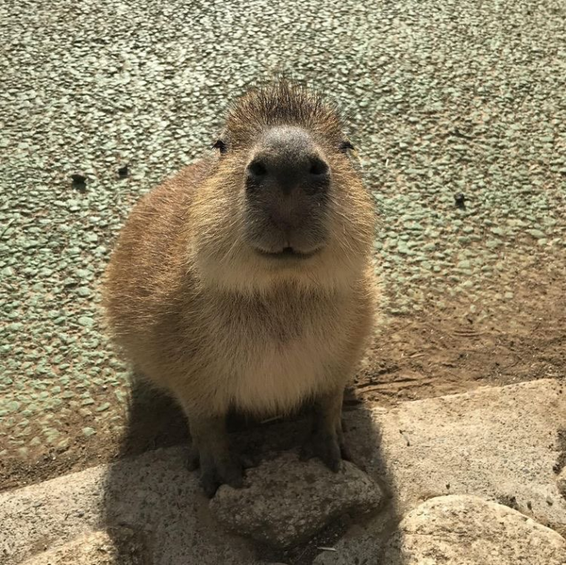
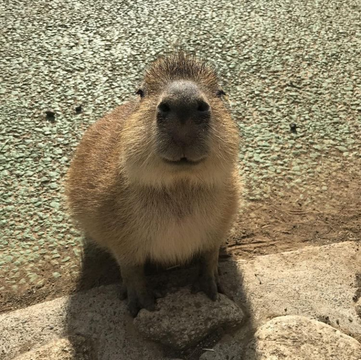

|

|
Elon Musk |
Founder and CEO of Tesla
Elon Reeve Musk FRS (/ilɒn/ EE-lon; born June 28, 1971) is a business magnate and investor. He is the founder, CEO, and Chief Engineer at SpaceX; angel investor, CEO, and Product Architect of Tesla, Inc.; founder of The Boring Company; and co-founder of Neuralink and OpenAI. With an estimated net worth of around US$203 billion as of June 2022,[4] Musk is the wealthiest person in the world according to both the Bloomberg Billionaires Index and the Forbes real-time billionaires list.[5][6] Musk was born to White South African parents in Pretoria, where he grew up. He briefly attended the University of Pretoria before moving to Canada at age 17, acquiring citizenship through his Canadian-born mother. He matriculated at Queen's University and transferred to the University of Pennsylvania two years later, where he received bachelor's degrees in Economics and Physics. He moved to California in 1995 to attend Stanford University but decided instead to pursue a business career, co-founding the web software company Zip2 with his brother Kimbal. The startup was acquired by Compaq for $307 million in 1999. The same year, Musk co-founded online bank X.com, which merged with Confinity in 2000 to form PayPal. The company was bought by eBay in 2002 for $1.5 billion.
| date | work |
|---|---|
| 2010-2013 | Lead development at tempo app |
| 2010 | research at the institute of cognitive neurosciences |
| programing | ★☆☆☆☆ |
| gaming | ★★★★★ |
| learning | ★★★☆☆ |